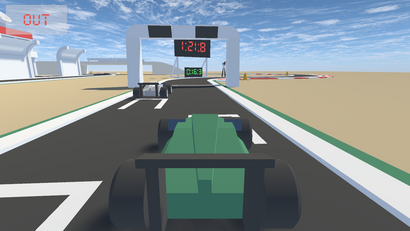
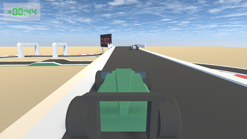
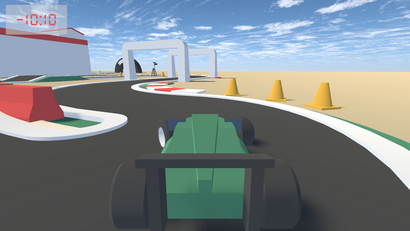

16.33
Implementación
16.33 es un videojuego de carreras contrarreloj para los fanáticos de los domingos ;).
Enlace a la web de descarga. (Es posible jugar en la web también) (Recomendable jugar con mando)
Implementación de clasificación online con la API de Loot Locker.
* La sensación al ver el vídeo no es la misma que al jugar debido a la diferencia de fps
Los assets son todos de Kenney, disponible para Windows, Linux y WebGL, jugable con mando.


